temperature background - Yahoo India Image Search results
Yahoo Image Search Results Page
Header
Home
News
Mail
Finance
Weather
Sports
Sign In
Yahoo
Search Box
Search query
Search
All
Images
Videos
News
Filter
Size
All
Small
Medium
Large
Extra-large
Colour
All
Colour only
Black & White
Type
All
Photo
Clipart
Line drawing
Animated GIF
Transparent
Layout
All
Square
Wide
Tall
People
All
Faces only
Head and shoulders
No people
Time
All
Past 24 hours
Past week
Past month
Past year
Usage Rights
All
All Creative Commons
Public domain
Free to share and use
Free to share and use commercially
Free to modify, share and use
Free to modify, share and use commercially
Search Results
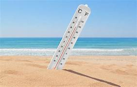
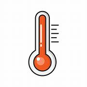
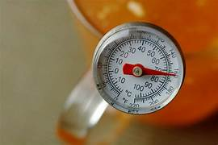
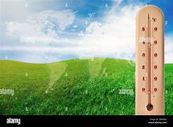
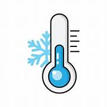
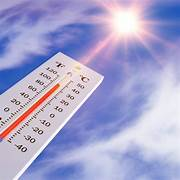
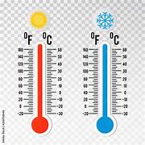
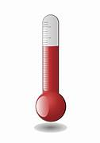
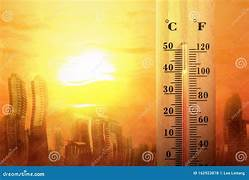
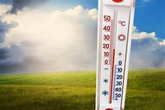
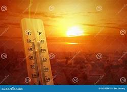
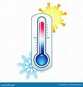
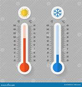
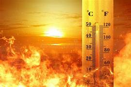
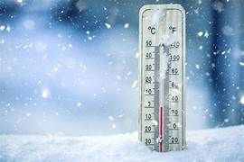
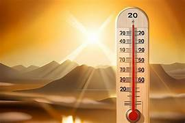
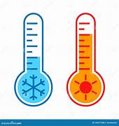
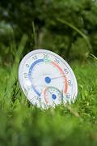
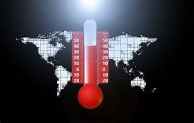
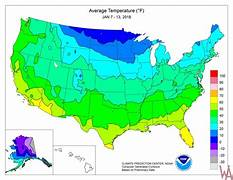
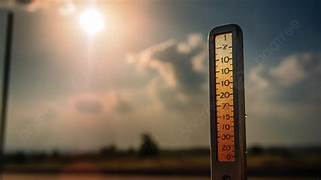
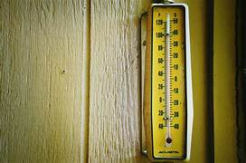
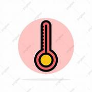
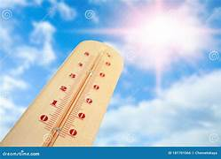
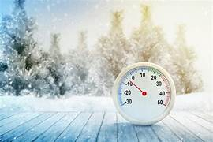
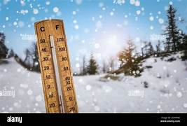
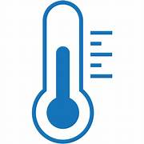
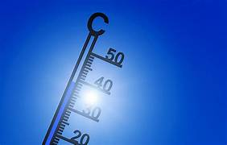
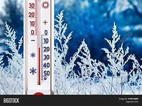
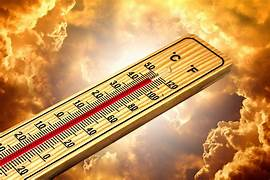
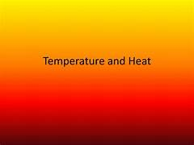
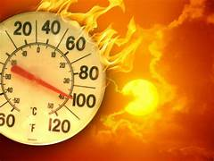
Temperature Wallpapers - Wallpaper Cave
wallpapercave.com
1280x1024
View image
View page
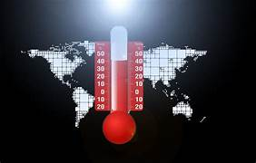
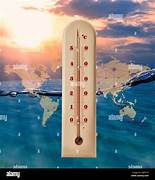
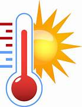
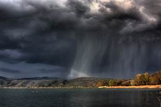
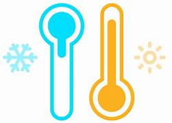
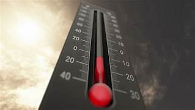
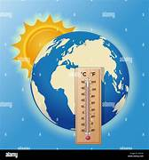
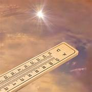
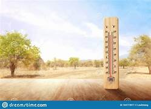
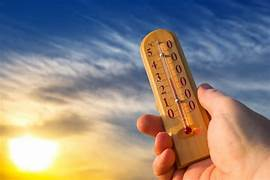
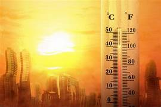
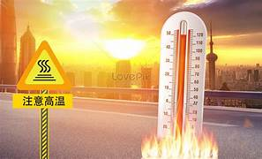
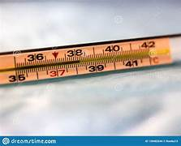
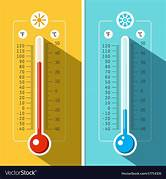
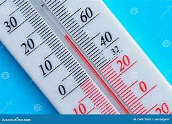
Show More Images


![](https://in.images.search.yahoo.com/images/view;_ylt=AwrPplRIb4pmss4fESC9HAx.;_ylu=c2VjA3NyBHNsawNpbWcEb2lkAzNmNGJkZDlhNzg1N2JkMjZkZmZjNmQ3YjVlMjNkN2VmBGdwb3MDMTAEaXQDYmluZw--?back=https%3A%2F%2Fin.images.search.yahoo.com%2Fsearch%2Fimages%3Fp%3Dtemperature%2Bbackground%26type%3DE210IN826G0%26fr%3Dmcafee%26fr2%3Dpiv-web%26tab%3Dorganic%26ri%3D10&w=1470&h=980&imgurl=static.vecteezy.com%2Fsystem%2Fresources%2Fpreviews%2F023%2F261%2F691%2Fnon_2x%2Fhot-sun-heat-wave-climate-change-global-warming-high-temperature-thermometer-weather-warning-illustration-background-vector.jpg&rurl=https%3A%2F%2Fwww.vecteezy.com%2Fvector-art%2F23261691-hot-sun-heat-wave-climate-change-global-warming-high-temperature-thermometer-weather-warning-vector-illustration-background&size=84.2KB&p=temperature+background&oid=3f4bdd9a7857bd26dffc6d7b5e23d7ef&fr2=piv-web&fr=mcafee&tt=Hot+sun+heat+wave.+Climate+change.+Global+warming.+High+temperature+...&b=0&ni=21&no=10&ts=&tab=organic&sigr=lA_BMBHXxnf7&sigb=vtUIXNg8z1lq&sigi=.kiySwuU7Bb6&sigt=kQdcAt3P41AV&.crumb=YSbMMzDRWEr&fr=mcafee&fr2=piv-web&type=E210IN826G0)


![](https://in.images.search.yahoo.com/images/view;_ylt=AwrPplRIb4pmss4fFSC9HAx.;_ylu=c2VjA3NyBHNsawNpbWcEb2lkA2ExODU5OGU0OWZjM2YyZTczNjIxYzIyYTFmMTZhMDIwBGdwb3MDMTQEaXQDYmluZw--?back=https%3A%2F%2Fin.images.search.yahoo.com%2Fsearch%2Fimages%3Fp%3Dtemperature%2Bbackground%26type%3DE210IN826G0%26fr%3Dmcafee%26fr2%3Dpiv-web%26tab%3Dorganic%26ri%3D14&w=1300&h=954&imgurl=c8.alamy.com%2Fcomp%2F2BFP0NJ%2Fworld-map-with-thermometer-showing-high-temperature-and-landscape-on-background-concept-of-global-warming-and-climate-change-save-planet-and-environ-2BFP0NJ.jpg&rurl=https%3A%2F%2Fwww.alamy.com%2Fworld-map-with-thermometer-showing-high-temperature-and-landscape-on-background-concept-of-global-warming-and-climate-change-save-planet-and-environ-image353910750.html&size=111.4KB&p=temperature+background&oid=a18598e49fc3f2e73621c22a1f16a020&fr2=piv-web&fr=mcafee&tt=World+map+with+thermometer+showing+high+temperature+and+landscape+on+...&b=0&ni=21&no=14&ts=&tab=organic&sigr=3AVpdz6x9S.c&sigb=lyulLysGdQdv&sigi=WJpTCf3ljSz4&sigt=strhRwTD_5Q7&.crumb=YSbMMzDRWEr&fr=mcafee&fr2=piv-web&type=E210IN826G0)


![](https://in.images.search.yahoo.com/images/view;_ylt=AwrPplRIb4pmss4fIiC9HAx.;_ylu=c2VjA3NyBHNsawNpbWcEb2lkAzhjZTg2YmE5ODZmYWQxNTc4YzQyNTk4Zjc4NTU0YjI3BGdwb3MDMjcEaXQDYmluZw--?back=https%3A%2F%2Fin.images.search.yahoo.com%2Fsearch%2Fimages%3Fp%3Dtemperature%2Bbackground%26type%3DE210IN826G0%26fr%3Dmcafee%26fr2%3Dpiv-web%26tab%3Dorganic%26ri%3D27&w=1600&h=1690&imgurl=thumbs.dreamstime.com%2Fz%2Fhot-cold-meteorology-thermometers-transparent-background-hot-cold-meteorology-thermometers-transparent-background-101683316.jpg&rurl=https%3A%2F%2Fwww.dreamstime.com%2Fhot-cold-meteorology-thermometers-transparent-background-hot-cold-meteorology-thermometers-transparent-background-image101683316&size=149.0KB&p=temperature+background&oid=8ce86ba986fad1578c42598f78554b27&fr2=piv-web&fr=mcafee&tt=Hot+and+Cold+Meteorology+Thermometers+on+Transparent+Background+Stock+...&b=0&ni=21&no=27&ts=&tab=organic&sigr=BkAqh8i7Y.7i&sigb=U.np.6Xj1Oz5&sigi=Q6tQMEQGZCEd&sigt=o.qDlxpan3JM&.crumb=YSbMMzDRWEr&fr=mcafee&fr2=piv-web&type=E210IN826G0)


![](https://in.images.search.yahoo.com/images/view;_ylt=AwrPplRIb4pmss4fLCC9HAx.;_ylu=c2VjA3NyBHNsawNpbWcEb2lkAzJmMTJiMjdlOTY4YjFiNGIwMGQxM2I3OTJiZjFhN2E5BGdwb3MDMzcEaXQDYmluZw--?back=https%3A%2F%2Fin.images.search.yahoo.com%2Fsearch%2Fimages%3Fp%3Dtemperature%2Bbackground%26type%3DE210IN826G0%26fr%3Dmcafee%26fr2%3Dpiv-web%26tab%3Dorganic%26ri%3D37&w=474&h=265&imgurl=png.pngtree.com%2Fbackground%2F20230611%2Foriginal%2Fpngtree-the-thermometer-in-sunlight-is-showing-an-average-temperature-picture-image_3165112.jpg&rurl=https%3A%2F%2Fkor.pngtree.com%2Ffreebackground%2Fthe-thermometer-in-sunlight-is-showing-an-average-temperature_3165112.html&size=614.5KB&p=temperature+background&oid=2f12b27e968b1b4b00d13b792bf1a7a9&fr2=piv-web&fr=mcafee&tt=%ED%96%87%EB%B9%9B%EC%9D%98+%EC%98%A8%EB%8F%84%EA%B3%84%EB%8A%94+%ED%8F%89%EA%B7%A0+%EC%98%A8%EB%8F%84%EB%A5%BC+%EB%B3%B4%EC%97%AC%EC%A4%8D%EB%8B%88%EB%8B%A4%2C+%EB%8D%94%EC%9A%B4%EB%82%A0%EC%9D%98+%EC%82%AC%EC%A7%84+%EB%B0%B0%EA%B2%BD+%EC%9D%BC%EB%9F%AC%EC%8A%A4%ED%8A%B8+%EB%B0%8F+%EC%82%AC%EC%A7%84+%EB%AC%B4%EB%A3%8C+%EB%8B%A4%EC%9A%B4%EB%A1%9C%EB%93%9C+-+Pngtree&b=0&ni=21&no=37&ts=&tab=organic&sigr=fc6yvUDQYHce&sigb=cxlHczaliukI&sigi=ZALp6cIuakjp&sigt=YvooG46lUM6h&.crumb=YSbMMzDRWEr&fr=mcafee&fr2=piv-web&type=E210IN826G0)


![](https://in.images.search.yahoo.com/images/view;_ylt=AwrPplRIb4pmss4fMSC9HAx.;_ylu=c2VjA3NyBHNsawNpbWcEb2lkA2FhNTdmNGE1ZTY4NTJlYjMzOTAwZDQyODI5YzA3MDQyBGdwb3MDNDIEaXQDYmluZw--?back=https%3A%2F%2Fin.images.search.yahoo.com%2Fsearch%2Fimages%3Fp%3Dtemperature%2Bbackground%26type%3DE210IN826G0%26fr%3Dmcafee%26fr2%3Dpiv-web%26tab%3Dorganic%26ri%3D42&w=800&h=500&imgurl=thumbs.dreamstime.com%2Fb%2Fweather-forecast-background-climate-change-concept-collage-sky-image-variety-conditions-bright-sun-blue-dark-stormy-226555797.jpg&rurl=https%3A%2F%2Fwww.dreamstime.com%2Fweather-forecast-background-climate-change-concept-collage-sky-image-variety-conditions-bright-sun-blue-dark-stormy-image226555797&size=51.3KB&p=temperature+background&oid=aa57f4a5e6852eb33900d42829c07042&fr2=piv-web&fr=mcafee&tt=Weather+Forecast+Background%2C+Climate+Change+Concept%2C+Collage+of+Sky+...&b=0&ni=21&no=42&ts=&tab=organic&sigr=FA7CW.tWMrzL&sigb=Ur009ptiGHIQ&sigi=YjpSFGHjVoa_&sigt=c_HJ6sHYJs88&.crumb=YSbMMzDRWEr&fr=mcafee&fr2=piv-web&type=E210IN826G0)


![](https://in.images.search.yahoo.com/images/view;_ylt=AwrPplRIb4pmss4fNiC9HAx.;_ylu=c2VjA3NyBHNsawNpbWcEb2lkA2FiN2U3NDkwOTcyM2M0N2JiODk4MDFhNTNiNjQzMTM4BGdwb3MDNDcEaXQDYmluZw--?back=https%3A%2F%2Fin.images.search.yahoo.com%2Fsearch%2Fimages%3Fp%3Dtemperature%2Bbackground%26type%3DE210IN826G0%26fr%3Dmcafee%26fr2%3Dpiv-web%26tab%3Dorganic%26ri%3D47&w=474&h=265&imgurl=png.pngtree.com%2Fthumb_back%2Ffh260%2Fbackground%2F20231002%2Fpngtree-minimal-3d-rendering-illustration-contrasting-cold-and-hot-weather-with-thermometer-image_13557582.png&rurl=https%3A%2F%2Fpngtree.com%2Ffreebackground%2Fminimal-3d-rendering-illustration-contrasting-cold-and-hot-weather-with-thermometer-symbol_13290463.html&size=75.1KB&p=temperature+background&oid=ab7e74909723c47bb89801a53b643138&fr2=piv-web&fr=mcafee&tt=Minimal+3d+Rendering+Illustration+Contrasting+Cold+And+Hot+Weather+With+...&b=0&ni=21&no=47&ts=&tab=organic&sigr=X7GSjh1DkE54&sigb=2NgAyXtvxBZ9&sigi=RmKZA2Sy.bL9&sigt=4Goy6o9J0zTZ&.crumb=YSbMMzDRWEr&fr=mcafee&fr2=piv-web&type=E210IN826G0)


![](https://in.images.search.yahoo.com/images/view;_ylt=AwrPplRVb4pmeLYfZi69HAx.;_ylu=c2VjA3NyBHNsawNpbWcEb2lkA2JhYTQ1ZWQ4OWQ5ZjJmZmYxYWM5NmI1ZTM0YTExMWE5BGdwb3MDNzIEaXQDYmluZw--?back=https%3A%2F%2Fin.images.search.yahoo.com%2Fsearch%2Fimages%3Fp%3Dtemperature%2Bbackground%26type%3DE210IN826G0%26fr%3Dmcafee%26fr2%3Dpiv-web%26nost%3D1%26tab%3Dorganic%26ri%3D72&w=1201&h=1390&imgurl=c8.alamy.com%2Fcomp%2F2BFP113%2Fworld-map-with-thermometer-showing-high-temperature-and-seascape-on-background-concept-of-global-warming-and-climate-change-save-planet-and-environm-2BFP113.jpg&rurl=https%3A%2F%2Fwww.alamy.com%2Fworld-map-with-thermometer-showing-high-temperature-and-seascape-on-background-concept-of-global-warming-and-climate-change-save-planet-and-environm-image353910959.html&size=129.0KB&p=temperature+background&oid=baa45ed89d9f2fff1ac96b5e34a111a9&fr2=piv-web&fr=mcafee&tt=World+map+with+thermometer+showing+high+temperature+and+seascape+on+...&b=61&ni=21&no=72&ts=&tab=organic&sigr=KzYjqKBOaMwR&sigb=EYA__tPo9qAg&sigi=bufWdKaMuGnO&sigt=vojnjwJbDfjU&.crumb=YSbMMzDRWEr&fr=mcafee&fr2=piv-web&type=E210IN826G0)


![](https://in.images.search.yahoo.com/images/view;_ylt=AwrPplRVb4pmeLYfay69HAx.;_ylu=c2VjA3NyBHNsawNpbWcEb2lkAzY2MzJjNDkyYmNiZDM5MzA3NDdmMzhmYjYyMzc4M2JjBGdwb3MDNzcEaXQDYmluZw--?back=https%3A%2F%2Fin.images.search.yahoo.com%2Fsearch%2Fimages%3Fp%3Dtemperature%2Bbackground%26type%3DE210IN826G0%26fr%3Dmcafee%26fr2%3Dpiv-web%26nost%3D1%26tab%3Dorganic%26ri%3D77&w=1200&h=673&imgurl=png.pngtree.com%2Fbackground%2F20230610%2Foriginal%2Fpngtree-an-old-fashioned-thermometer-atop-a-background-of-clouds-picture-image_3060016.jpg&rurl=https%3A%2F%2Fzh.pngtree.com%2Ffreebackground%2Fan-old-fashioned-thermometer-atop-a-background-of-clouds_3060016.html&size=877.9KB&p=temperature+background&oid=6632c492bcbd3930747f38fb623783bc&fr2=piv-web&fr=mcafee&tt=%E9%9B%B2%E5%B1%A4%E8%83%8C%E6%99%AF%E4%B8%8A%E7%9A%84%E8%80%81%E5%BC%8F%E6%BA%AB%E5%BA%A6%E8%A8%88%2C+%E5%A4%A7%E7%86%B1%E5%A4%A9%E5%9C%96%E7%89%87%E8%83%8C%E6%99%AF%E5%9C%96%E7%89%87%E5%92%8C%E6%A1%8C%E5%B8%83%E5%85%8D%E8%B2%BB%E4%B8%8B%E8%BC%89&b=61&ni=21&no=77&ts=&tab=organic&sigr=vhgqsnPqlGL8&sigb=hWWjpODTJmP_&sigi=Wm1ZzlkF_Mpy&sigt=PT6V26e2LS3E&.crumb=YSbMMzDRWEr&fr=mcafee&fr2=piv-web&type=E210IN826G0)


![](https://in.images.search.yahoo.com/images/view;_ylt=AwrPplRVb4pmeLYffC69HAx.;_ylu=c2VjA3NyBHNsawNpbWcEb2lkAzJiZjE5ODM2MDU1M2I0ZjhjNTFjOTk3YmJjM2M0Mjg4BGdwb3MDOTQEaXQDYmluZw--?back=https%3A%2F%2Fin.images.search.yahoo.com%2Fsearch%2Fimages%3Fp%3Dtemperature%2Bbackground%26type%3DE210IN826G0%26fr%3Dmcafee%26fr2%3Dpiv-web%26nost%3D1%26tab%3Dorganic%26ri%3D94&w=1600&h=682&imgurl=thumbs.dreamstime.com%2Fz%2Fweather-forecast-background-climate-change-concept-weather-forecast-background-climate-change-concept-collage-sky-image-125652381.jpg&rurl=https%3A%2F%2Fwww.dreamstime.com%2Fweather-forecast-background-climate-change-concept-weather-forecast-background-climate-change-concept-collage-sky-image-image125652381&size=96.2KB&p=temperature+background&oid=2bf198360553b4f8c51c997bbc3c4288&fr2=piv-web&fr=mcafee&tt=Weather+Forecast+Background%2C+Climate+Change+Concept+Stock+Image+-+Image+...&b=61&ni=21&no=94&ts=&tab=organic&sigr=8JLRkKpuXSQ1&sigb=2aMnVceGR0YJ&sigi=ofo3eLYDJI5P&sigt=YDkUULnkQ0ZD&.crumb=YSbMMzDRWEr&fr=mcafee&fr2=piv-web&type=E210IN826G0)


![](https://in.images.search.yahoo.com/images/view;_ylt=AwrPplRVb4pmeLYfhC69HAx.;_ylu=c2VjA3NyBHNsawNpbWcEb2lkAzU4YTgwZWMyNWI4ZDcwOTBjMGM4NDUxYTE4YjQ5NDY2BGdwb3MDMTAyBGl0A2Jpbmc-?back=https%3A%2F%2Fin.images.search.yahoo.com%2Fsearch%2Fimages%3Fp%3Dtemperature%2Bbackground%26type%3DE210IN826G0%26fr%3Dmcafee%26fr2%3Dpiv-web%26nost%3D1%26tab%3Dorganic%26ri%3D102&w=1600&h=1157&imgurl=thumbs.dreamstime.com%2Fz%2Fthermometer-measuring-ambient-temperature-symbolic-cold-blue-background-copy-space-text-lettering-concept-234577655.jpg&rurl=https%3A%2F%2Fwww.dreamstime.com%2Fthermometer-measuring-ambient-temperature-symbolic-cold-blue-background-copy-space-text-lettering-concept-image234577655&size=161.4KB&p=temperature+background&oid=58a80ec25b8d7090c0c8451a18b49466&fr2=piv-web&fr=mcafee&tt=Thermometer+for+Measuring+the+Ambient+Temperature.+Symbolic+Cold+Blue+...&b=61&ni=21&no=102&ts=&tab=organic&sigr=MyIxhcSWfJQG&sigb=PoSUzePowSAU&sigi=mZnAI1GJlf2u&sigt=nFT9bKrbx_cf&.crumb=YSbMMzDRWEr&fr=mcafee&fr2=piv-web&type=E210IN826G0)


![](https://in.images.search.yahoo.com/images/view;_ylt=AwrPplRVb4pmeLYfiy69HAx.;_ylu=c2VjA3NyBHNsawNpbWcEb2lkAzU1MjlkNzlhNjFhODQxZjQ0Mzc2MTExN2M1MTVlMDAyBGdwb3MDMTA5BGl0A2Jpbmc-?back=https%3A%2F%2Fin.images.search.yahoo.com%2Fsearch%2Fimages%3Fp%3Dtemperature%2Bbackground%26type%3DE210IN826G0%26fr%3Dmcafee%26fr2%3Dpiv-web%26nost%3D1%26tab%3Dorganic%26ri%3D109&w=800&h=534&imgurl=thumbs.dreamstime.com%2Fb%2Fweather-forecast-concept-air-temperature-termometer-cloud-lightening-sun-rainy-clouds-yellow-background-weather-118173735.jpg&rurl=https%3A%2F%2Fwww.dreamstime.com%2Fweather-forecast-concept-air-temperature-termometer-cloud-lightening-sun-rainy-clouds-yellow-background-weather-image118173735&size=25.4KB&p=temperature+background&oid=5529d79a61a841f443761117c515e002&fr2=piv-web&fr=mcafee&tt=Weather+Forecast+Concept.+Air+Temperature.+Termometer+among+Cloud+and+...&b=61&ni=21&no=109&ts=&tab=organic&sigr=8GnNae6IAzaX&sigb=jhe84_l45x7s&sigi=B5kbW8CVsPDD&sigt=9vLjtfoxbbhL&.crumb=YSbMMzDRWEr&fr=mcafee&fr2=piv-web&type=E210IN826G0)


![](https://in.images.search.yahoo.com/images/view;_ylt=AwrPplRVb4pmeLYfkC69HAx.;_ylu=c2VjA3NyBHNsawNpbWcEb2lkAzRiMDI4MGYwMjdiYjMxMGQyN2VjZDdiY2YwZTZiYjI1BGdwb3MDMTE0BGl0A2Jpbmc-?back=https%3A%2F%2Fin.images.search.yahoo.com%2Fsearch%2Fimages%3Fp%3Dtemperature%2Bbackground%26type%3DE210IN826G0%26fr%3Dmcafee%26fr2%3Dpiv-web%26nost%3D1%26tab%3Dorganic%26ri%3D114&w=1600&h=745&imgurl=thumbs.dreamstime.com%2Fz%2Fweather-forecast-background-climate-change-concept-collage-images-variety-conditions-bright-sun-blue-sky-dark-stormy-241503731.jpg&rurl=https%3A%2F%2Fwww.dreamstime.com%2Fweather-forecast-background-climate-change-concept-collage-images-variety-conditions-bright-sun-blue-sky-dark-stormy-image241503731&size=100.9KB&p=temperature+background&oid=4b0280f027bb310d27ecd7bcf0e6bb25&fr2=piv-web&fr=mcafee&tt=Weather+Forecast+Background%2C+Climate+Change+Concept%2C+Collage+of+Images+...&b=61&ni=21&no=114&ts=&tab=organic&sigr=WFi9ffXWa9TV&sigb=o7nm1lW3w_yh&sigi=bZyiusPHtt5G&sigt=6iqlnfV15bjd&.crumb=YSbMMzDRWEr&fr=mcafee&fr2=piv-web&type=E210IN826G0)


![](https://in.images.search.yahoo.com/images/view;_ylt=AwrPplRVb4pmeLYflC69HAx.;_ylu=c2VjA3NyBHNsawNpbWcEb2lkAzYyM2YxZjM2ZjI4ZjM1YmJkM2QzYTc2NTZkY2Y2NjRkBGdwb3MDMTE4BGl0A2Jpbmc-?back=https%3A%2F%2Fin.images.search.yahoo.com%2Fsearch%2Fimages%3Fp%3Dtemperature%2Bbackground%26type%3DE210IN826G0%26fr%3Dmcafee%26fr2%3Dpiv-web%26nost%3D1%26tab%3Dorganic%26ri%3D118&w=1920&h=3653&imgurl=www.esa.int%2Fvar%2Fesa%2Fstorage%2Fimages%2Fesa_multimedia%2Fimages%2F2018%2F07%2Fthe_cosmic_microwave_background_temperature_and_polarisation%2F17601868-1-eng-GB%2FThe_Cosmic_Microwave_Background_temperature_and_polarisation_pillars.jpg&rurl=https%3A%2F%2Fwww.esa.int%2FESA_Multimedia%2FImages%2F2018%2F07%2FThe_Cosmic_Microwave_Background_temperature_and_polarisation&size=1978.8KB&p=temperature+background&oid=623f1f36f28f35bbd3d3a7656dcf664d&fr2=piv-web&fr=mcafee&tt=ESA+-+The+Cosmic+Microwave+Background%3A+temperature+and+polarisation&b=61&ni=21&no=118&ts=&tab=organic&sigr=_TWxcMImGAzW&sigb=X9sKCyLMXFV6&sigi=d7vgAU3fYA.g&sigt=TpYg6dLHnArY&.crumb=YSbMMzDRWEr&fr=mcafee&fr2=piv-web&type=E210IN826G0)
![](https://in.images.search.yahoo.com/images/view;_ylt=AwrPplRVb4pmeLYflS69HAx.;_ylu=c2VjA3NyBHNsawNpbWcEb2lkAzJmNWMxZmIxOGI5NTVhZGVlMTQwMDA0MGYzMTZiZTk1BGdwb3MDMTE5BGl0A2Jpbmc-?back=https%3A%2F%2Fin.images.search.yahoo.com%2Fsearch%2Fimages%3Fp%3Dtemperature%2Bbackground%26type%3DE210IN826G0%26fr%3Dmcafee%26fr2%3Dpiv-web%26nost%3D1%26tab%3Dorganic%26ri%3D119&w=1600&h=1155&imgurl=thumbs.dreamstime.com%2Fz%2Fthermometer-showing-ambient-temperature-humidity-isolated-white-background-thermometer-showing-ambient-temperature-149912061.jpg&rurl=https%3A%2F%2Fwww.dreamstime.com%2Fthermometer-showing-ambient-temperature-humidity-isolated-white-background-thermometer-showing-ambient-temperature-image149912061&size=61.6KB&p=temperature+background&oid=2f5c1fb18b955adee1400040f316be95&fr2=piv-web&fr=mcafee&tt=Thermometer+Showing+Ambient+Temperature+and+Humidity.+Isolated+with+...&b=61&ni=21&no=119&ts=&tab=organic&sigr=Iv6ja9PBCzf5&sigb=c4JQ4_KmO4b6&sigi=zD_ejU3Wjw3t&sigt=oDpJMIv.aB9L&.crumb=YSbMMzDRWEr&fr=mcafee&fr2=piv-web&type=E210IN826G0)


![](https://in.images.search.yahoo.com/images/view;_ylt=AwrKA0prb4pmCjslXv.9HAx.;_ylu=c2VjA3NyBHNsawNpbWcEb2lkAzNiY2U3NWM2MGEzMWU3YzUyYjYxYTUzMzhiOGY2MzBlBGdwb3MDMTI3BGl0A2Jpbmc-?back=https%3A%2F%2Fin.images.search.yahoo.com%2Fsearch%2Fimages%3Fp%3Dtemperature%2Bbackground%26type%3DE210IN826G0%26fr%3Dmcafee%26fr2%3Dpiv-web%26nost%3D1%26tab%3Dorganic%26ri%3D127&w=1600&h=1157&imgurl=thumbs.dreamstime.com%2Fz%2Fthermometer-measuring-ambient-temperature-symbolic-cold-blue-background-copy-space-text-lettering-concept-235725318.jpg&rurl=https%3A%2F%2Fwww.dreamstime.com%2Fthermometer-measuring-ambient-temperature-symbolic-cold-blue-background-copy-space-text-lettering-concept-image235725318&size=211.7KB&p=temperature+background&oid=3bce75c60a31e7c52b61a5338b8f630e&fr2=piv-web&fr=mcafee&tt=Thermometer+for+Measuring+the+Ambient+Temperature.+Symbolic+Cold+Blue+...&b=121&ni=21&no=127&ts=&tab=organic&sigr=ZM.h2tTDe0Wh&sigb=OOLC1NrPre6L&sigi=fhMXVtL0uEjd&sigt=nFT9bKrbx_cf&.crumb=YSbMMzDRWEr&fr=mcafee&fr2=piv-web&type=E210IN826G0)


![](https://in.images.search.yahoo.com/images/view;_ylt=AwrKA0prb4pmCjslaf.9HAx.;_ylu=c2VjA3NyBHNsawNpbWcEb2lkAzdhZDIwNWQwZDE4NGRmMTZlOGE2YzE2NmI1NzlkNmYxBGdwb3MDMTM4BGl0A2Jpbmc-?back=https%3A%2F%2Fin.images.search.yahoo.com%2Fsearch%2Fimages%3Fp%3Dtemperature%2Bbackground%26type%3DE210IN826G0%26fr%3Dmcafee%26fr2%3Dpiv-web%26nost%3D1%26tab%3Dorganic%26ri%3D138&w=1600&h=1158&imgurl=thumbs.dreamstime.com%2Fz%2Fthermometer-measuring-air-temperature-yellow-background-thermometer-measuring-air-temperature-yellow-background-135579912.jpg&rurl=https%3A%2F%2Fwww.dreamstime.com%2Fthermometer-measuring-air-temperature-yellow-background-thermometer-measuring-air-temperature-yellow-background-image135579912&size=86.3KB&p=temperature+background&oid=7ad205d0d184df16e8a6c166b579d6f1&fr2=piv-web&fr=mcafee&tt=Thermometer+for+Measuring+Air+Temperature+on+Yellow+Background+Stock+...&b=121&ni=21&no=138&ts=&tab=organic&sigr=z7nX7BQT84hW&sigb=rMztJQ9ke.q.&sigi=6WK5VfViEoiT&sigt=fDVzSflTSEvE&.crumb=YSbMMzDRWEr&fr=mcafee&fr2=piv-web&type=E210IN826G0)


![](https://in.images.search.yahoo.com/images/view;_ylt=AwrKA0prb4pmCjslbv.9HAx.;_ylu=c2VjA3NyBHNsawNpbWcEb2lkAzJmNWMxZmIxOGI5NTVhZGVlMTQwMDA0MGYzMTZiZTk1BGdwb3MDMTQzBGl0A2Jpbmc-?back=https%3A%2F%2Fin.images.search.yahoo.com%2Fsearch%2Fimages%3Fp%3Dtemperature%2Bbackground%26type%3DE210IN826G0%26fr%3Dmcafee%26fr2%3Dpiv-web%26nost%3D1%26tab%3Dorganic%26ri%3D143&w=1600&h=1155&imgurl=thumbs.dreamstime.com%2Fz%2Fthermometer-showing-ambient-temperature-humidity-isolated-white-background-thermometer-showing-ambient-temperature-149912061.jpg&rurl=https%3A%2F%2Fwww.dreamstime.com%2Fthermometer-showing-ambient-temperature-humidity-isolated-white-background-thermometer-showing-ambient-temperature-image149912061&size=61.6KB&p=temperature+background&oid=2f5c1fb18b955adee1400040f316be95&fr2=piv-web&fr=mcafee&tt=Thermometer+Showing+Ambient+Temperature+and+Humidity.+Isolated+with+...&b=121&ni=21&no=143&ts=&tab=organic&sigr=Iv6ja9PBCzf5&sigb=PluliK1SYTIH&sigi=zD_ejU3Wjw3t&sigt=oDpJMIv.aB9L&.crumb=YSbMMzDRWEr&fr=mcafee&fr2=piv-web&type=E210IN826G0)


![](https://in.images.search.yahoo.com/images/view;_ylt=AwrKA0prb4pmCjsleP.9HAx.;_ylu=c2VjA3NyBHNsawNpbWcEb2lkAzYyM2YxZjM2ZjI4ZjM1YmJkM2QzYTc2NTZkY2Y2NjRkBGdwb3MDMTUzBGl0A2Jpbmc-?back=https%3A%2F%2Fin.images.search.yahoo.com%2Fsearch%2Fimages%3Fp%3Dtemperature%2Bbackground%26type%3DE210IN826G0%26fr%3Dmcafee%26fr2%3Dpiv-web%26nost%3D1%26tab%3Dorganic%26ri%3D153&w=1920&h=3653&imgurl=www.esa.int%2Fvar%2Fesa%2Fstorage%2Fimages%2Fesa_multimedia%2Fimages%2F2018%2F07%2Fthe_cosmic_microwave_background_temperature_and_polarisation%2F17601868-1-eng-GB%2FThe_Cosmic_Microwave_Background_temperature_and_polarisation_pillars.jpg&rurl=https%3A%2F%2Fwww.esa.int%2FESA_Multimedia%2FImages%2F2018%2F07%2FThe_Cosmic_Microwave_Background_temperature_and_polarisation&size=1978.8KB&p=temperature+background&oid=623f1f36f28f35bbd3d3a7656dcf664d&fr2=piv-web&fr=mcafee&tt=ESA+-+The+Cosmic+Microwave+Background%3A+temperature+and+polarisation&b=121&ni=21&no=153&ts=&tab=organic&sigr=_TWxcMImGAzW&sigb=0aZRKXdCrZHk&sigi=d7vgAU3fYA.g&sigt=TpYg6dLHnArY&.crumb=YSbMMzDRWEr&fr=mcafee&fr2=piv-web&type=E210IN826G0)


![](https://in.images.search.yahoo.com/images/view;_ylt=AwrKA0prb4pmCjslfP.9HAx.;_ylu=c2VjA3NyBHNsawNpbWcEb2lkAzE1ZjlkNDgyYTIxYzkxZWI5MTc2ZWQ5ZTdlODQ5MjE3BGdwb3MDMTU3BGl0A2Jpbmc-?back=https%3A%2F%2Fin.images.search.yahoo.com%2Fsearch%2Fimages%3Fp%3Dtemperature%2Bbackground%26type%3DE210IN826G0%26fr%3Dmcafee%26fr2%3Dpiv-web%26nost%3D1%26tab%3Dorganic%26ri%3D157&w=3264&h=2448&imgurl=get.pxhere.com%2Fphoto%2Fcloud-sky-rain-atmosphere-weather-storm-cumulus-blue-clouds-thunderstorm-gloomy-mood-forward-evening-sky-phenomenon-dark-clouds-clouds-form-storm-clouds-meteorological-phenomenon-1091303.jpg&rurl=https%3A%2F%2Fpxhere.com%2Fko%2Fphoto%2F1091303&size=1184.7KB&p=temperature+background&oid=15f9d482a21c91eb9176ed9e7e849217&fr2=piv-web&fr=mcafee&tt=%EB%AC%B4%EB%A3%8C+%EC%9D%B4%EB%AF%B8%EC%A7%80+%3A+%EB%B9%84%2C+%EB%B6%84%EC%9C%84%EA%B8%B0%2C+%EB%82%A0%EC%94%A8%2C+%EC%A0%81%EC%9A%B4%2C+%ED%91%B8%EB%A5%B8%2C+%EB%87%8C%EC%9A%B0%2C+%EC%9A%B0%EC%9A%B8%ED%95%9C%2C+%EA%B8%B0%EB%B6%84%2C+%EC%95%9E%EC%9C%BC%EB%A1%9C%2C+%EC%A0%80%EB%85%81+%ED%95%98%EB%8A%98%2C+%EC%95%94%EC%9A%B4%2C+%EA%B5%AC%EB%A6%84+%EB%AA%A8%EC%96%91%2C+%ED%8F%AD%ED%92%8D+%EA%B5%AC%EB%A6%84+...&b=121&ni=21&no=157&ts=&tab=organic&sigr=c3_aTFa_ItD3&sigb=lc3gF2Gr5lpr&sigi=WnVxcFxKEL1f&sigt=6N.zmJ6Qm2vG&.crumb=YSbMMzDRWEr&fr=mcafee&fr2=piv-web&type=E210IN826G0)


![](https://in.images.search.yahoo.com/images/view;_ylt=AwrKA0prb4pmCjslf_.9HAx.;_ylu=c2VjA3NyBHNsawNpbWcEb2lkA2UzMzA4MzFmNmZlMDNjZmZjYzkzZGQzZDE4MWRiNGQ0BGdwb3MDMTYwBGl0A2Jpbmc-?back=https%3A%2F%2Fin.images.search.yahoo.com%2Fsearch%2Fimages%3Fp%3Dtemperature%2Bbackground%26type%3DE210IN826G0%26fr%3Dmcafee%26fr2%3Dpiv-web%26nost%3D1%26tab%3Dorganic%26ri%3D160&w=6000&h=3375&imgurl=get.pxhere.com%2Fphoto%2Fsky-cloud-atmosphere-thunder-cumulus-lightning-daytime-storm-darkness-evening-geological-phenomenon-thunderstorm-meteorological-phenomenon-computer-wallpaper-calm-dusk-wind-horizon-dawn-1438107.jpg&rurl=https%3A%2F%2Fpxhere.com%2Fth%2Fphoto%2F1438107&size=2253.1KB&p=temperature+background&oid=e330831f6fe03cffcc93dd3d181db4d4&fr2=piv-web&fr=mcafee&tt=%E0%B8%A3%E0%B8%B9%E0%B8%9B%E0%B8%A0%E0%B8%B2%E0%B8%9E+%3A+%E0%B8%97%E0%B9%89%E0%B8%AD%E0%B8%87%E0%B8%9F%E0%B9%89%E0%B8%B2%2C+%E0%B9%80%E0%B8%A1%E0%B8%86%2C+%E0%B8%9A%E0%B8%A3%E0%B8%A3%E0%B8%A2%E0%B8%B2%E0%B8%81%E0%B8%B2%E0%B8%A8%2C+%E0%B8%9F%E0%B9%89%E0%B8%B2%E0%B8%A3%E0%B9%89%E0%B8%AD%E0%B8%87%2C+Cumulus%2C+%E0%B8%9F%E0%B9%89%E0%B8%B2%E0%B8%9C%E0%B9%88%E0%B8%B2%2C+%E0%B8%95%E0%B8%AD%E0%B8%99%E0%B8%81%E0%B8%A5%E0%B8%B2%E0%B8%87%E0%B8%A7%E0%B8%B1%E0%B8%99+...&b=121&ni=21&no=160&ts=&tab=organic&sigr=GLxh4vVgB2IO&sigb=BRXrY7BQ2U6J&sigi=fOpdPglneCJz&sigt=KYyTLQ1WJt7Z&.crumb=YSbMMzDRWEr&fr=mcafee&fr2=piv-web&type=E210IN826G0)


{kind=link}